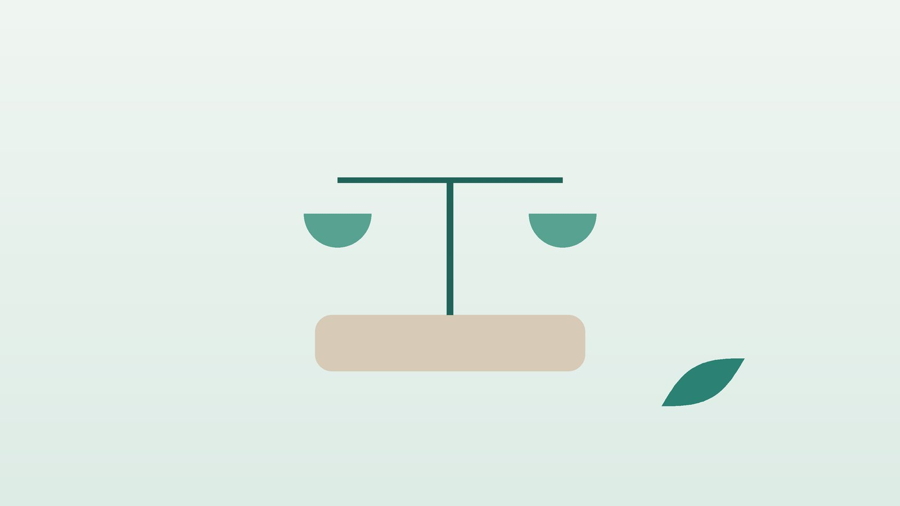

건강 칼럼 · 인천 비만 한의원
식욕 조절이 어렵고 살이 쉽게 찐다면, 비만 한방 관리의 원칙

나의 체중, 관리가 필요할까요?
- 체질량지수(BMI)가 25 이상이다
- 허리둘레가 남성 90cm, 여성 85cm 이상이다
- 배가 고프지 않아도 스트레스를 받으면 먹게 된다
- 밤늦게 먹거나 한 번에 많이 먹는 습관이 있다
- 혈압, 혈당, 콜레스테롤 수치가 경계라는 말을 들었다
- 다이어트를 해도 요요가 반복된다
이 체크리스트는 진단 도구가 아니라 상담이 필요한지 가늠해 보는 참고용입니다.
비만은 어떤 기준으로 판단하나요?
대한비만학회 진료지침은 체질량지수(몸무게 kg을 키 m의 제곱으로 나눈 값)가 23~24.9이면 비만 전 단계, 25 이상이면 비만, 30 이상이면 2단계, 35 이상이면 3단계 비만(고도비만)으로 나눕니다. 같은 체중이라도 배에 지방이 몰리면 위험이 커서, 허리둘레가 남성 90cm, 여성 85cm 이상이면 복부비만으로 봅니다. 서양보다 낮은 기준을 쓰는 것은 한국인이 같은 BMI에서도 당뇨병과 고혈압 위험이 더 높기 때문입니다.
체중은 먹는 양과 쓰는 양의 균형뿐 아니라 수면 부족, 스트레스, 일부 약물(스테로이드, 일부 정신과 약 등), 갑상선기능저하증 같은 질환의 영향도 받습니다. 지침은 식사 조절, 신체 활동, 행동 교정을 치료의 기본으로 두고, 그래도 부족할 때 약물 치료나 비만대사수술을 더하도록 권합니다. 짧은 기간에 많이 빼는 것보다 줄인 체중을 오래 유지하는 것이 건강에 더 중요합니다.
체중 증가 뒤에 다른 병이 숨어 있는 신호
- 특별히 더 먹지 않았는데 몇 달 사이 체중이 빠르게 늘었다
- 얼굴이 둥글어지고 배에 붉은 튼살이 생기며 팔다리는 가늘어진다
- 추위를 타고 붓고 변비가 생기면서 체중이 늘었다
- 코골이가 심하고 낮에 졸음이 쏟아진다
- 생리가 불규칙해지고 털이 늘었다
- 폭식 후 구토나 설사약 복용을 반복한다
갑상선기능저하증, 쿠싱 증후군, 수면무호흡증, 다낭성난소증후군, 섭식장애 가능성이 있어 내과, 산부인과, 정신건강의학과 진료를 먼저 받으세요.
한의학은 비만을 어떻게 보나요?
한의학에서는 살이 찐 상태를 비만(肥滿) 또는 비인(肥人)이라 불렀고, 예부터 '살찐 사람은 담습이 많다(肥人多痰濕)'고 보았습니다. 음식으로 들어온 영양을 소화기인 비위(脾胃)가 제대로 운반하고 쓰지 못하면, 남은 것이 끈적한 담습(痰濕)이 되어 몸에 쌓인다는 해석입니다.
그래서 한의학의 비만 관리는 단순히 식욕을 누르는 것이 아니라, 식욕이 왜 과한지, 왜 몸이 붓고 무거운지를 함께 봅니다. 위에 열이 많아 자꾸 배가 고픈 분, 소화기가 약해 조금만 먹어도 붓는 분, 스트레스로 먹는 분, 기초 대사가 떨어져 몸이 찬 분은 같은 체중이라도 관리 방향이 다릅니다.
나는 어떤 유형일까?
1. 위열(胃熱) 자꾸 배고픈 유형
- 이런 분에게 많아요
- 식욕이 왕성하고 먹는 속도가 빠른 분
- 나타나는 모습
- 먹어도 금방 허기지고 기름진 음식과 야식을 찾는다
- 함께 오는 몸의 신호
- 입 마름, 변비, 얼굴 열감, 입냄새
- 진찰에서 보이는 모습
- 혀가 붉고 설태가 누렇다
- 치료 방향
- 위의 열을 내리고 식욕을 가라앉히는 방향 (청열 위주의 처방, 필요시 마황을 신중히 포함)
- 오늘부터 해 볼 것
- 한 끼를 20분 이상에 걸쳐 천천히 드세요.
2. 비허습곤(脾虛濕困) 붓고 무거운 유형
- 이런 분에게 많아요
- 많이 먹지 않는데 살이 붓듯이 찌는 분
- 나타나는 모습
- 하체와 얼굴이 잘 붓고 오후가 되면 몸이 무겁다
- 함께 오는 몸의 신호
- 식후 피로, 묽은 변, 땀이 많음
- 진찰에서 보이는 모습
- 혀가 크고 잇자국, 설태가 하얗고 두꺼움
- 치료 방향
- 소화기를 도와 습을 빼는 방향 (방기황기탕·삼령백출산 계열)
- 오늘부터 해 볼 것
- 짠 음식과 밀가루를 줄이고 저녁에 다리를 올려 쉬세요.
3. 간울(肝鬱) 스트레스로 먹는 유형
- 이런 분에게 많아요
- 업무 압박이나 감정 기복이 큰 분
- 나타나는 모습
- 배고픔보다 기분 때문에 먹고 단것이 당긴다
- 함께 오는 몸의 신호
- 가슴 답답, 한숨, 생리 전 폭식
- 진찰에서 보이는 모습
- 맥이 팽팽함
- 치료 방향
- 막힌 기운을 풀어 감정적 식사를 줄이는 방향 (시호소간산 계열)
- 오늘부터 해 볼 것
- 먹고 싶을 때 10분 기다리며 물 한 컵을 먼저 마셔 보세요.
4. 양허(陽虛) 대사가 가라앉은 유형
- 이런 분에게 많아요
- 나이가 들며 살이 붙고 몸이 찬 분
- 나타나는 모습
- 적게 먹어도 잘 빠지지 않고 배와 허리가 차다
- 함께 오는 몸의 신호
- 추위를 탐, 무기력, 소변이 잦음
- 진찰에서 보이는 모습
- 혀가 담백하고 맥이 깊고 느림
- 치료 방향
- 몸을 데워 대사를 돕는 방향 (온양 위주의 처방)
- 오늘부터 해 볼 것
- 근력 운동을 주 2회 이상 넣으세요.
한의원에서는 어떻게 진찰하나요?
- 체성분과 허리둘레: 체중보다 근육량, 체지방률, 허리둘레를 함께 기록합니다.
- 건강 상태 확인: 혈압, 심장 질환, 갑상선, 당뇨, 복용 약, 임신 가능성을 반드시 여쭙니다.
- 식사 패턴: 언제, 무엇을, 어떤 기분일 때 먹는지 3일 식사 기록으로 확인합니다.
- 설진·맥진: 열, 습, 막힘, 찬 기운 중 무엇이 앞서는지 판단합니다.
침·약침·한약 치료는 어떻게 하나요?
1. 침 치료
- 중완(中脘): 배꼽과 명치 사이 한가운데. 위의 기능을 조절합니다.
- 천추(天樞): 배꼽 양옆 약 세 손가락 너비. 장의 움직임을 돕습니다.
- 풍륭(豐隆): 바깥 복사뼈와 무릎 바깥쪽의 중간쯤 정강이 바깥. 담습을 삭이는 대표 혈입니다.
- 족삼리(足三里)·음릉천(陰陵泉): 무릎 아래 바깥쪽과 안쪽. 소화를 돕고 붓기를 빼는 데 씁니다.
침 치료가 체중 감소에 도움이 되었다는 연구들이 있지만 규모가 작고 기간이 짧은 것이 많아, 식사·운동과 함께하는 보조 수단으로 활용합니다.
2. 약침
복부와 옆구리 등 지방이 몰린 부위의 관련 경혈에 약침을 적용할 수 있습니다. 시술 부위에 멍이나 뭉침이 생길 수 있어 미리 설명드리고 진행합니다.
3. 한약과 마황에 대한 솔직한 안내
한방 비만 처방에 흔히 쓰이는 마황(麻黃)에는 에페드린 성분이 들어 있어 식욕을 줄이고 에너지 소비를 늘리는 작용이 있지만, 교감신경을 자극하기 때문에 가슴 두근거림, 불면, 혈압 상승, 손 떨림, 입 마름, 소변 보기 어려움 같은 부작용이 생길 수 있습니다. 미국에서는 에페드라 성분 건강보조식품과 관련된 심혈관·신경계 이상 반응 보고가 쌓여 2004년 식품의약국(FDA)이 해당 보조식품 판매를 금지하기도 했습니다.
그래서 심장 질환, 부정맥, 고혈압, 갑상선기능항진증, 녹내장, 전립선비대증이 있거나 임신·수유 중인 분에게는 마황 처방을 쓰지 않거나 매우 신중히 판단합니다. 다른 식욕억제제와 함께 복용하지 말고, 복용 중 두근거림, 잠을 못 이룸, 두통이 생기면 바로 연락해 주세요. 마황 없이도 유형에 맞는 처방이 가능하며, 한약은 감량 수치를 약속하는 수단이 아니라 식사 조절을 버티게 돕는 도구로 생각하시는 것이 좋습니다.
원장님이 네이버 블로그에 진료 이야기와 건강 정보를 꾸준히 올리고 있습니다. 더 많은 이야기는 블로그에서 확인해 보세요.
블로그 보기치료는 어떤 순서로 진행되나요?
- 건강 상태 확인 다른 원인 질환과 복용 약, 마황 사용 가능 여부를 확인합니다.
- 첫 한방 진료 유형과 식사 패턴을 보고 현실적인 목표를 함께 정합니다.
- 관리기 주 1~2회 내원하며 침·약침, 한약과 식사 기록을 점검합니다.
- 유지기 약을 줄이거나 끊은 뒤에도 생활 습관이 유지되는지 확인합니다.
체중 변화는 사람마다 크게 다르며, 감량 정도를 미리 약속하지 않습니다. 기간은 진찰 후 개인별로 안내합니다.
생활 속 체중 관리의 기본
- 식사 기록: 먹은 것과 그때의 기분을 적기만 해도 무심코 먹는 양이 줄어듭니다.
- 단백질과 채소 먼저: 한 끼에 채소와 단백질 반찬을 먼저 먹고 밥은 나중에 드세요.
- 음료 점검: 당이 든 음료, 술, 달콤한 커피는 생각보다 열량이 많습니다.
- 걷기와 근력: 매일 걷기에 주 2회 이상 근력 운동을 더하면 줄인 체중을 지키기 쉽습니다.
- 잠: 잠이 부족하면 식욕 호르몬이 흔들려 다음 날 더 먹게 됩니다.
다른 진료가 함께 필요한 경우
- 혈압, 혈당, 콜레스테롤이 높다면 내과 치료를 함께 받으세요.
- 고도비만이거나 동반 질환이 있다면 가정의학과·내과에서 비만 약물 치료나 비만대사수술 상담을 받아 보세요.
- 폭식과 구토가 반복되면 정신건강의학과 진료가 필요합니다.
- 생리 불순과 체중 증가가 함께라면 산부인과에서 다낭성난소증후군을 확인하세요.
자주 묻는 질문 Q&A
- Q1. 한약만 먹으면 살이 빠지나요?
- 식사와 활동의 변화 없이 한약만으로 체중을 관리하기는 어렵습니다. 한약은 생활 습관을 돕는 수단입니다.
- Q2. 얼마나 빠질 수 있나요?
- 체중 변화는 체질, 생활 습관, 건강 상태에 따라 크게 달라 미리 수치를 약속하지 않습니다.
- Q3. 마황이 들어간 약은 위험한가요?
- 두근거림, 불면, 혈압 상승이 생길 수 있어 심장 질환, 고혈압, 임신 중인 분에게는 쓰지 않거나 신중히 판단합니다.
- Q4. 가슴이 두근거리는데 계속 먹어도 되나요?
- 복용을 멈추고 바로 연락해 주세요. 용량을 조절하거나 마황 없는 처방으로 바꿉니다.
- Q5. 병원 비만약과 같이 먹어도 되나요?
- 식욕억제제와 마황 처방을 함께 쓰면 부작용이 커질 수 있어 함께 복용하지 않습니다.
- Q6. 수유 중인데 다이어트 한약을 먹어도 되나요?
- 수유 중에는 마황 처방을 쓰지 않으며, 필요하면 식사와 생활 관리 위주로 상담합니다.
- Q7. 요요를 막으려면 어떻게 해야 하나요?
- 천천히 줄이고 근력 운동과 식사 습관을 유지하는 것이 가장 중요합니다.
- Q8. 체중은 그대로인데 허리둘레가 줄었어요.
- 근육이 늘고 지방이 줄었을 수 있어 긍정적인 변화입니다. 체성분과 허리둘레를 함께 보세요.
진료 안내
- 진료시간
- 평일 09:00~20:00 (점심시간 13:00~14:00)
토·일·공휴일 09:00~15:00 - 주소
- 인천광역시 서구 가경주로 46, 2층 (가정동)
인천2호선 가정중앙시장역 인근
영상으로 길 안내 보기 → - 주차
- 한의원 건물 바로 앞 1층 도원주차장
진료시간은 사정에 따라 바뀔 수 있으니 방문 전 전화로 확인해 주세요.
참고 자료
- 대한비만학회. 비만 진료지침 2022 (제8판)
- Haller CA, Benowitz NL. Adverse cardiovascular and central nervous system events associated with dietary supplements containing ephedra alkaloids. New England Journal of Medicine, 2000
- U.S. Food and Drug Administration, Final rule declaring dietary supplements containing ephedrine alkaloids adulterated, 2004
- 질병관리청 국가건강정보포털 — 원문
※ 이 글은 일반적인 건강 정보이며, 개인의 상태에 따라 치료 방법과 결과는 다를 수 있습니다. 정확한 진단과 치료는 진료를 통해 결정됩니다. 침·약침 시술 후 드물게 멍, 통증 등이 생길 수 있습니다.